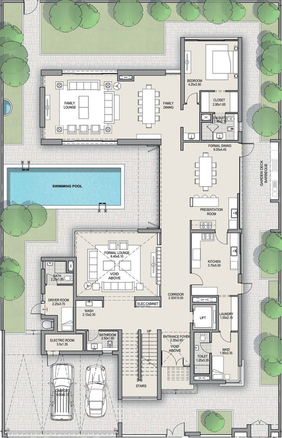
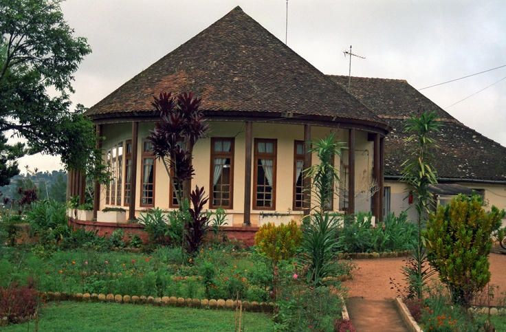
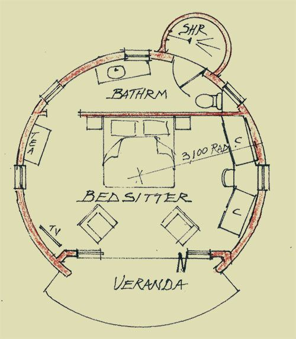

Bamenda – Cameroun
La conception architecturale à Bamenda, capitale régionale du Nord-Ouest du Cameroun, est fortement influencée par le contexte géographique, le climat tropical de montagne, les traditions culturelles et les réalités socio-économiques locales. Située dans une zone de hauts plateaux, la ville présente une architecture qui cherche à concilier fonctionnalité, durabilité et identité culturelle. Adaptation au climat et au site Le climat de Bamenda est caractérisé par des températures modérées et une saison des pluies marquée. La conception architecturale privilégie donc : des toitures en pente (souvent en tôle ou en tuiles) pour faciliter l’écoulement des eaux ; de larges débords de toit pour protéger les façades ; une bonne ventilation naturelle grâce à des ouvertures nombreuses et bien orientées ; l’implantation des bâtiments en tenant compte de la topographie accidentée. Matériaux et techniques de construction Les matériaux utilisés dans la conception architecturale à Bamenda sont majoritairement locaux et accessibles, ce qui réduit les coûts de construction : briques de terre stabilisée ; blocs de ciment ; bois pour les charpentes et finitions ; pierre locale dans certaines zones rurales. L’utilisation de ces matériaux répond à une logique de durabilité et d’adaptation aux conditions locales. Influences culturelles et sociales L’architecture de Bamenda reflète également l’héritage culturel des chefferies traditionnelles. Les bâtiments communautaires, les palais traditionnels et certaines habitations s’inspirent de formes vernaculaires, tout en intégrant des éléments modernes. Cette combinaison permet de préserver l’identité architecturale locale tout en répondant aux besoins contemporains. Architecture moderne et défis urbains Avec la croissance démographique et l’urbanisation rapide, Bamenda connaît une évolution vers une architecture plus moderne, notamment dans les bâtiments administratifs, commerciaux et résidentiels. Toutefois, la conception architecturale fait face à plusieurs défis : l’urbanisation non planifiée ; le manque d’infrastructures adaptées ; la pression foncière. Malgré ces contraintes, les architectes et constructeurs locaux cherchent de plus en plus à intégrer des principes de conception bioclimatique et de construction durable.
Les structures architecturales à Bamenda, ville située dans la région du Nord-Ouest du Cameroun, reflètent une adaptation aux conditions climatiques, à la topographie montagneuse et aux ressources locales. Elles combinent des techniques traditionnelles et modernes afin de répondre aux besoins résidentiels, institutionnels et commerciaux de la population. Typologie des structures À Bamenda, on distingue plusieurs types de structures architecturales : Structures résidentielles : maisons individuelles, logements collectifs et habitats semi-urbains ; Structures publiques : écoles, hôpitaux, bâtiments administratifs ; Structures commerciales : marchés, boutiques, immeubles de bureaux. Ces structures sont généralement de faible à moyenne hauteur, ce qui correspond aux capacités techniques locales et aux contraintes du sol. Systèmes porteurs Les bâtiments à Bamenda utilisent principalement des systèmes porteurs en béton armé, constitués de poteaux, poutres et dalles. Ce système est privilégié pour sa résistance, sa durabilité et sa capacité à supporter des charges importantes. Dans les zones périphériques, on retrouve également des structures en maçonnerie porteuse, utilisant des blocs de ciment ou des briques de terre stabilisée. Fondations et adaptation au terrain La topographie accidentée de Bamenda impose une attention particulière aux fondations. Les fondations sont souvent renforcées afin de : assurer la stabilité sur des terrains en pente ; limiter les risques d’érosion et de glissement de terrain ; garantir la durabilité des ouvrages. L’implantation des bâtiments est pensée pour épouser le relief naturel et réduire les travaux de terrassement. Matériaux de construction Les structures architecturales à Bamenda reposent sur l’utilisation de matériaux couramment disponibles : béton armé ; blocs de ciment ; bois pour les charpentes et les planchers ; tôles métalliques pour les toitures. Ces matériaux sont choisis pour leur coût accessible, leur disponibilité locale et leur facilité de mise en œuvre. Défis et évolution des structures Les structures architecturales de Bamenda font face à plusieurs défis, notamment : le manque de normes de construction strictes ; l’urbanisation rapide ; les contraintes économiques. Cependant, on observe une évolution progressive vers des structures plus sécurisées, intégrant des principes de résistance structurelle et de durabilité, notamment dans les nouveaux projets urbains. Conclusion Les structures architecturales à Bamenda traduisent un équilibre entre tradition et modernité. Elles répondent aux contraintes environnementales et socio-économiques tout en évoluant vers des systèmes constructifs plus performants, contribuant ainsi au développement urbain de la ville.
L’histoire de l’architecture à Bamenda est étroitement liée aux traditions culturelles des peuples du Nord-Ouest du Cameroun. À l’origine, l’architecture était principalement vernaculaire, utilisant des matériaux locaux tels que la terre, le bois et le chaume. Les palais des chefferies traditionnelles illustraient une organisation spatiale symbolique et communautaire. Avec la colonisation, de nouvelles techniques de construction et des matériaux modernes comme le ciment et la tôle ont été introduits. Après l’indépendance, l’urbanisation progressive a favorisé une architecture mixte, combinant formes traditionnelles et influences contemporaines adaptées au contexte local.
